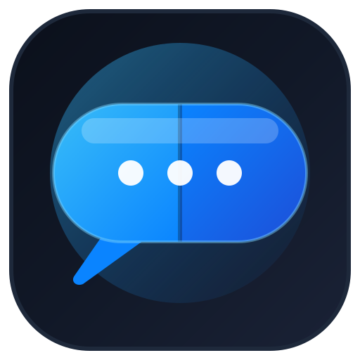
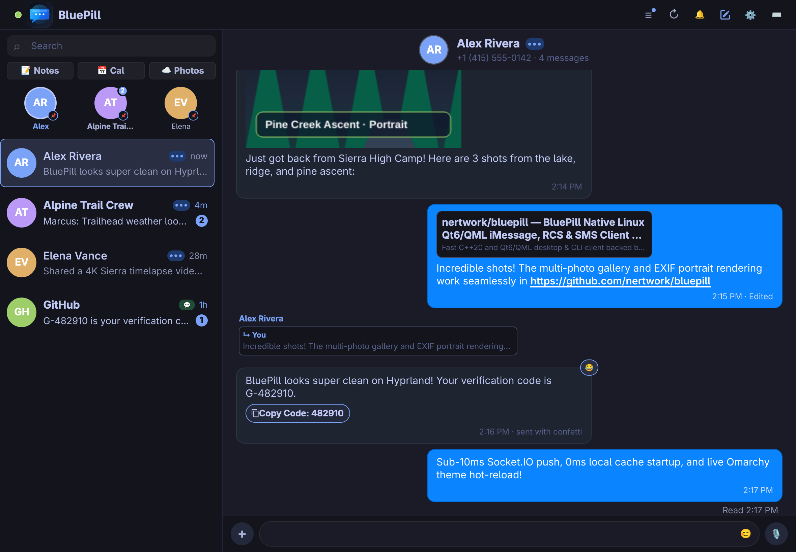

Native Qt6 C++ / QML iMessage, RCS & SMS Client for Linux & Windows + Zero-Electron macOS Cloud Relay

For engineers, Linux desktop users, and power enthusiasts, staying connected to Apple ecosystem communication has historically required heavy Electron or Flutter bridges like BlueBubbles. While functional, BlueBubbles carries a staggering footprint: 400 MB to 700 MB of RAM, sluggish startup times, choppy scrolling, and frequent sync stalls when processing multi-gigabyte message databases.
BluePill was designed from first principles to be the uncompromising, high-performance alternative: a compiled native Qt6 C++ / QML Linux client paired with an ultra-lean, native Python macOS relay service that directly interfaces with Apple's chat.db SQLite engine.
| Feature / Metric | BlueBubbles | BluePill v1.2.6 |
|---|---|---|
| Desktop Architecture | Electron / Chromium / Node.js | Compiled Qt6 C++20 / QML |
| Desktop Client Memory | 450 MB – 800 MB RAM | < 35 MB RAM |
| macOS Server Memory | 350 MB – 650 MB RAM | < 15 MB RAM |
| Launch Time | 4 – 8 seconds | Sub-second (200 ms) |
| Display Server | XWayland emulation layer | Native Wayland & X11 (Hyprland / Sway / GNOME) |
| Transport Protocol | HTTP / Firebase Cloud Messaging | Direct SSH Tunnel (ssh://) or HTTPS |
| Voice Memos | Basic HTML5 audio element | Interactive 28-Bar Amplitude Waveforms |
| Credential Storage | Plaintext config / browser cookie | Freedesktop SecretService (secret-tool) |
Hardware-accelerated rendering at 60fps with sub-second launch times. Native Wayland integration with Hyprland and Sway window rules.
Ultra-lean headless Python server running natively on Intel & Apple Silicon (macOS Big Sur through macOS Tahoe). Uses under 15 MB RAM.
Connect securely over ssh://user@mac-host without exposing HTTP ports to the internet or relying on Firebase push servers.
28-bar amplitude waveform visualization extracted via FFmpeg with interactive scrub-to-seek and playback speed controls.
Full support for heart, thumbs up, haha, exclamation, and question reactions, plus message effects and scheduled future delivery.
Full-featured web client hosted directly by the relay server with in-browser microphone recording and real-time event streaming.
Read-only SQLite WAL access on your Mac, 0600 config files, libsecret keyring support, and strict TLS verification with zero third-party cloud relays.
Every commit passes C++20/Qt6 builds, offscreen QtTest suites, cppcheck/qmllint static analysis, Arch makepkg, and Homebrew bottle checks.
Install via Homebrew Tap, link your Mac at bluepill.nertwork.com/portal, and start the daemon:
# Install from Homebrew Tap & link to BluePill Cloud
brew install nertwork/tap/bluepill
bluepill-server login
brew services start bluepillInstall the native Qt 6.8 client on Linux or Windows, then click Sign in at bluepill.nertwork.com → (or Try Live Demo):
# Arch Linux / Omarchy
yay -S bluepill
# Debian / Ubuntu (.deb from GitHub Releases)
sudo apt install ./bluepill_1.2.6_amd64.deb
# Fedora / RHEL (.rpm from GitHub Releases)
sudo dnf install ./bluepill-1.2.6-1.fc41.x86_64.rpm
# Windows 10/11 (Inno Setup Installer from GitHub Releases)
# Download BluePill-Setup-1.2.6-win64.exe at https://github.com/nertwork/bluepill/releases/latestcmake -B build -DCMAKE_BUILD_TYPE=Release
cmake --build build -j
sudo cmake --install buildBluePill is built with full automation support. You can point autonomous AI agents (Claude Code, Gemini CLI, Cursor, OpenCode, Codex) at the repository and instruct them to deploy BluePill with zero manual intervention. See our deterministic playbooks:
BluePill connects your Linux desktop (Arch Linux, Ubuntu, Fedora, Debian) to your own Mac acting as a lightweight zero-Electron relay. The Linux desktop runs a native Qt6 client consuming under 35 MB RAM, connecting over end-to-end encrypted direct SSH tunnels or HTTPS.
Unlike BlueBubbles (which requires a 500-700 MB Electron server on macOS and Electron/Flutter desktop clients), BluePill uses an ultra-lean native Python macOS relay (<15 MB RAM) reading chat.db via direct SQLite queries, paired with a compiled Qt6 C++ / QML native client for Linux. It launches in 200ms and uses negligible CPU.
No! BluePill supports native direct SSH transport (ssh://user@mac-host). If you have SSH access to your Mac (via LAN, WireGuard, Tailscale, or Cloudflare Tunnel), BluePill establishes secure authenticated tunnels without opening public HTTP ports or relying on Google Firebase notifications.
Yes. BluePill features inline 28-bar voice memo waveforms with interactive scrubbing, hardware audio playback, all Apple tapback reactions (heart, thumbs up, haha, exclamation), expressive effects, scheduled messages, and Find My device queries.
Thank you to everyone contributing code, bug reports, and platform improvements to BluePill:
bluepill-server relay, IMCore bridge, Web UI, Arch AUR & Homebrew packaging).any; chat GUID) iMessage/RCS/SMS service resolution (#36 / #28), Server Setup Port field & Tailscale relay discovery (#35 / #29 / #30), in-place photo timeline resolution (#42 / #44), confirmed message Edit/Unsend & right-click action bar (#55 / #49), Contact Info card, full macOS AddressBook fields & circular contact photos (#56 / #50), link-preview image decoding validation (#58 / #52), inline quoted-reply Thread View & Jump-to-Original (#59 / #53), and macOS pinned conversations sync & context menu Pin/Unpin (#60 / #54).View the full GitHub Contributors Graph.